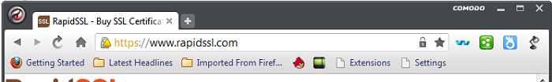
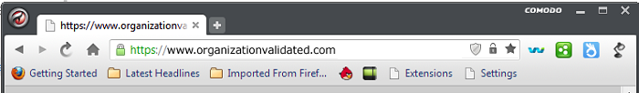
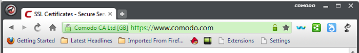
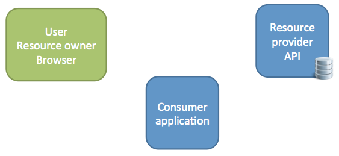
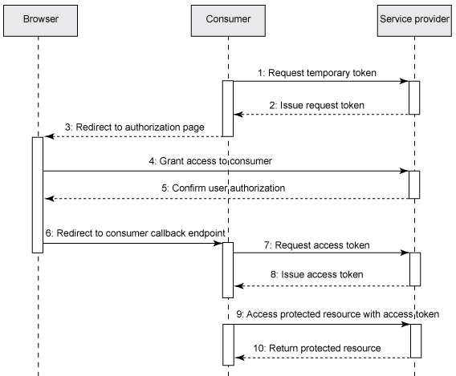

Olika typer av SSL-certifikat
Domain Validated (DV)
Låg kostnad, validerar endast domänen inte "affärsverksamheten" bakom

Organization Validation (OV) Validerar domänen samt organisationen (adresser, land, säte o.s.v.) 
Extended Validation (EV) Som OV men även ytterligare delar som ger ett större förtroende för organisationen 
OAuth
Lösenord är INTE konfetti
Foto from Wikipedia
Varför OAuth?

- Som användare/resursägare vill du minska spridning och antal av lösenord
- Som tjänstägare vill slippa hantera dina användare
- Man vill begränsa åtkomsten till resurser
- Som resursägare kan jag återkalla en tredjepartsapplikations rättigheter
OAuth
OAuth 1.0- OAuth 1.0a (2010)
- OAuth 2.0 (oktober 2012)
- 3-legged OAuth (user/resource owner - API consumer - service provider)
- 2-legged OAuth (API consumer - service provider)
